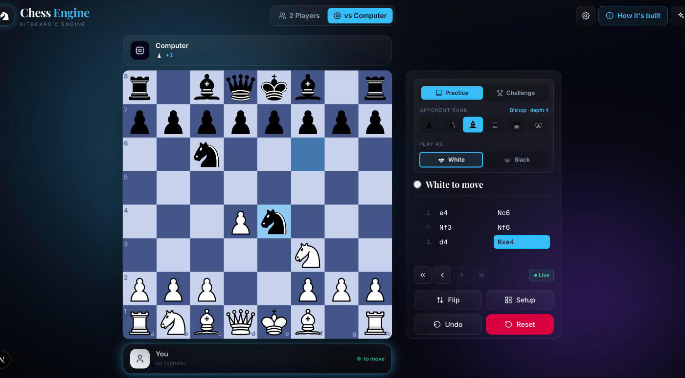

A chess engine I built from scratch in C. It's the computer you play against, the part of a chess program that reads the position, works out the best move it can find, and plays it.
A complete chess engine written from scratch in C, with no chess library doing the thinking. It takes any chess position, works out the best move it can find, and plays it. The board you interact with is a Next.js frontend, but the part that actually plays chess is roughly 1,000 lines of C: bitboard board representation, full legal move generation, a position evaluator, and a negamax search with alpha‑beta pruning.
The engine is completely stateless. It stores nothing between moves. Every turn, the browser sends the full position as a FEN string to a Next.js API route, which spawns the compiled C binary as a subprocess, passes it the position and a search depth, and reads back a single UCI move from stdout. One position in, one move out, with no game stored on the server.
Difficulty:
The engine was built in order, each piece depending on the one before it. Here is the path from an empty file to something that plays a real game of chess.
Where I started
My goal in this project was to make the engine, the part that takes a chess position and figures out the best move. So I made a call early on that the frontend is not the project. The board, the dragging, the visuals, that all leans on existing libraries (chess.js and react-chessboard) on purpose. I didn't want to rebuild that. I wanted to spend my time on the part that actually thinks and finds the best move.
The other early decision was to keep the engine completely stateless. It remembers nothing between moves. Every turn, the browser hands it the full position as a FEN string, it works out one move, prints it, and exits. One position in, one move out, with no game stored on the server.
I started by researching bitboards in depth, since they formed the foundation of every chess engine. A bitboard represents the 64 squares of a chessboard using a 64-bit integer, where each bit corresponds to a specific square. By setting, clearing, and checking individual bits, I could efficiently track the locations of pieces and perform operations such as generating moves, detecting attacks, and updating positions. I studied bitwise operators, masking, shifts, and piece-specific bitboards to understand how chess engines process board information quickly. I researched the other major components of a chess engine like move generation, position evaluation, search algorithms, etc.
Before building
Before coding anything I set up a header, defs.h, with all the little stuff I'd lean on for the rest of the project. Since the board was going to be bitboards I needed clean ways to poke at individual bits.
So I wrote a handful of macros that show up basically everywhere after this: set_bit to drop a piece on a square, get_bit to check one, pop_bit to clear one. I continued to add to this as I developed, such as count_bits and a lowest-set-bit finder, which are really just CPU instructions (popcount and count-trailing-zeros). They are helpers, but the entire engine is built on top of them.
First thing I actually built
First real thing I coded was the parser. A FEN string is just the whole position written as text: where every piece is, whose turn it is, castling rights, en passant, the move counters. I learned the format, then walked it character by character: letters drop a piece onto its bitboard, digits skip that many empty squares, slashes move down to the next rank.
Once the pieces were placed I rebuilt the 'occupancy' bitboards: all the white pieces, all the black, and everything combined. I needed them because almost every step after this asks some version of 'is this square occupied?'.
Then: how pieces move, part 1
Next I taught pieces how they move, and I started with the easy ones: the pieces that jump to a fixed set of squares no matter what's around them. A knight always hits the same L-shaped squares relative to where it stands, a king the squares right next to it, pawns their two capture diagonals.
Since those patterns never change, I just precomputed them once when the program starts, into a lookup table with one entry per square. The only annoying part was the edges. A knight on the a-file shouldn't 'wrap around' to the h-file, so I masked those off. After that, asking where a knight can go is a single table lookup.
How pieces move, part 2
Then the harder ones: the pieces that slide. A rook keeps going until something stops it, so you can't precompute it the same way, since it depends on what's in the way. So for these I cast a ray out from the square in each direction, one square at a time, and stop as soon as I hit a piece (including that blocker itself, since you're allowed to capture it).
Bishops walk the diagonals, rooks the straight lines, and a queen turned out to be the easiest of all, since it's literally just the rook rays and the bishop rays OR'd together.
Detecting check
Around here I needed a reliable way to ask whether a given square is being attacked, both for spotting check and for making sure a king doesn't castle through a square that's under fire. Looping over every enemy piece would've been slow.
So I used a trick that's kind of backwards: I pretend a piece of each type is standing on the square I'm asking about, generate its attacks, and check if any land on a real enemy piece of that same type. If a 'knight' placed there hits an actual enemy knight, then yeah, that square is attacked by a knight. Same logic for every piece, all in one function.
Putting it together
With movement and attacks sorted, I wrote the thing that lists every move in a position. The normal moves were easy by this point, but chess has a pile of special cases I had to handle one at a time: pawns pushing one or two squares, captures, en passant, promoting into four different pieces, and castling (which needs the squares empty and not under attack).
To keep moves cheap to throw around, I packed each one into a single integer: the from-square, to-square, which piece, any promotion, and a few flags (capture, double-push, en passant, castle) all bit-packed together. One macro to build it, a few more to pull the pieces back out.
Applying and filtering moves
Everything up to here was 'pseudo-legal': moves that follow how a piece moves but might leave your own king sitting in check, which obviously isn't allowed. So I wrote make_move to properly apply a move: move the piece, clear a captured one, handle en passant and promotion, shuffle the rook on castling, update castling rights, flip whose turn it is, rebuild the occupancies.
The legality filter on top of that was actually simple: copy the board, make the move on the copy, and ask my is_square_attacked function whether my own king is now in check. If it is, throw the move out. Whatever survives is the real, legal move list.
Evaluating positions
An engine needs an opinion on whether a position is good or bad. I started dead simple: just count material. Pawn 1, knight and bishop 3, rook 5, queen 9, then add up White and subtract Black. That alone is enough to stop it from hanging pieces.
Then I made it smarter with piece-square tables: every piece gets a small bonus or penalty depending on where it's sitting. Knights like the centre, pawns want to march up the board, the king should tuck itself away early. It's all scored from White's side, and the search just flips the sign when it's Black's turn.
Looking ahead
Now the part that actually 'thinks'. To pick a move it looks ahead: try a move, imagine the opponent's best reply, then my best reply to that, and so on, and keep whatever leads to the best spot. The neat trick is negamax. Since a great position for me is an equally bad one for my opponent, I can just flip the score at each level and reuse the exact same code for both sides.
Searching everything is hopelessly slow, so I added alpha-beta pruning: the moment a line is proven worse than something I've already found, I stop looking at it entirely. Same best move, a fraction of the work. Checkmate scores as a huge negative, stalemate as zero.
The difficulty dial
There's really only one knob for difficulty: how many moves deep the search looks. Two deep is instant but not great, seven deep takes a few seconds and is really tough to beat.
Every extra level multiplies the work though. Depth eight already blows past a minute right now on my Mac.
Hooking up the browser
Last piece was getting the two halves to talk. A tiny Next.js route spawns the compiled C program as a subprocess, passes it the FEN and a depth, and reads back the single move it prints out. That's the entire contract between them.
On the browser side, chess.js handles the rules and react-chessboard draws everything. Those are the libraries I leaned on so I could spend my time on the engine instead.
Where it's going
There are a few things I'd be interested in improving from here. The one I'd start with is move ordering, which tries captures before quiet moves so alpha-beta prunes way harder. After that, quiescence search, so it stops freezing the count in the middle of a trade and seeing ghosts a move past where it looked.
I'd also like to add iterative deepening and a transposition table so it remembers positions it's already analyzed instead of redoing them. Every one of those buys more depth for the same time, and depth is basically strength.
The point of this project, and the part I actually built, is the engine: the C program that finds the move the computer plays against you. That is the real work here.
Everything wrapped around it, the board UI, the animations, the themes, the dramatic flourishes, was built by Claude. I was just having fun dressing the engine up after getting the engine working.
Engine:
Frontend: